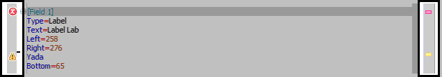
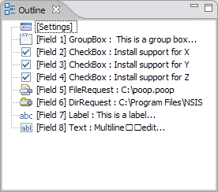
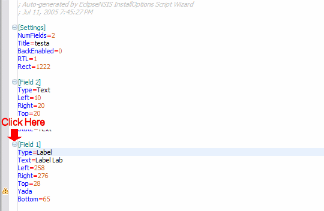
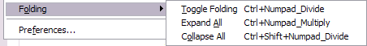
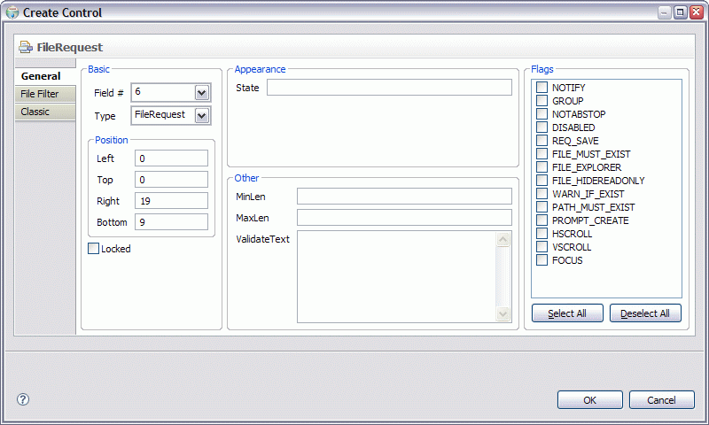
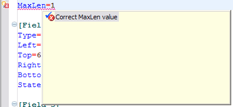

Source Editor
The Source Editor provides a text-based interface for editing InstallOptions scripts. It also validates the InstallOptions script dynamically as text is modified, and indicates errors and warning in the Problems view as well as the vertical and outline rulers. Additionally, the editor offers the following features:
Vertical and Overview Rulers
The vertical ruler is to the left of the editing area in the source
editor and is used to show text ranges and line-based annotations (e.g.,
problems, bookmarks, tasks, etc.) adjacent to their text line.
The overview ruler is on the right hand side of the editing area, and is used
to show annotations concerning the entire script. These annotations are
shown relative to their position in the script and do not move as the user
scrolls the script source. There usually is a corresponding annotation on
the vertical ruler when that portion of the script is visible.

Code Outline
The source editor includes a code outline view for the currently-active InstallOptions script. The outline view lists sections in the InstallOptions INI script, and updates dynamically as text is modified in the source editor.

Code Folding
The source editor supports folding of sections in the InstallOptions INI script. Click on the image below for a preview of how folding works in the source editor.

Code folding functions are also available on the vertical ruler context menu and as keyboard shortcuts.

- Toggle Folding
- Turn folding on or off in the current InstallOptions source editor.
Shortcut: Ctrl+NumPad /
- Expand All
- Expand all folded code regions in the current InstallOptions source editor.
Shortcut: Ctrl+NumPad *
- Expand
- Expand the folded code region at the caret position in the current InstallOptions source editor.
Shortcut: Ctrl+NumPad +
- Collapse
- Collapse the folded code region at the caret position in the current InstallOptions source editor.
Shortcut: Ctrl+NumPad -
- Collapse All
- Collapse all expanded code regions in the current InstallOptions source editor.
Shortcut: Ctrl+Shift+NumPad /
Source Editing Commands
The source editor includes a number of commands for simplify and improve the experience of creating and editing InstallOptions scripts.
These can be accessed either from the InstallOptions menuitem in the main menu bar, by right-clicking in the editor to display the editor popup menu or by using the editor toolbar. Some commands are also available in the source editor outline view. Most commands also provide keyboard shortcuts.
- Create Control
- Create an InstallOptions control in the source editor. When selected, a dialog is presented to the user where the control type and the various attributes associated with the control
may be specified. The command is not available if the InstallOptions script has any errors.
Shortcut: Alt+C

- Edit Control
 Edit the current InstallOptions control in the source editor. The command is only available if the caret position in the editor falls
within an INI section which represents an InstallOptions control. When selected, a dialog is presented to the user where the control type and the various attributes associated with the control
may be specified. The command is not available if the InstallOptions script has any errors.
Edit the current InstallOptions control in the source editor. The command is only available if the caret position in the editor falls
within an INI section which represents an InstallOptions control. When selected, a dialog is presented to the user where the control type and the various attributes associated with the control
may be specified. The command is not available if the InstallOptions script has any errors.
Shortcut: Alt+E
- Delete Control
 Delete the current InstallOptions control in the source editor. The command is only available if the caret position in the editor falls
within an INI section which represents an InstallOptions control. The command is not available if the InstallOptions script has any errors.
Delete the current InstallOptions control in the source editor. The command is only available if the caret position in the editor falls
within an INI section which represents an InstallOptions control. The command is not available if the InstallOptions script has any errors.
Shortcut: Alt+Z
- Reorder INI Sections
 Reformat the current InstallOptions script in the source editor, so that the Settings section is first, followed by the Field sections in sequential order.
The command is not available if the InstallOptions script has any errors.
Reformat the current InstallOptions script in the source editor, so that the Settings section is first, followed by the Field sections in sequential order.
The command is not available if the InstallOptions script has any errors.
- Fix Problems
- Fix any problems in the current InstallOptions script.
The following options are supported:
- Fix all problems- errors as well as warnings.
- Fix errors only.
- Fix warnings only.
- Export as HTML
 Export the InstallOptions script as an HTML file. The exported HTML file includes the same syntax coloring as the script
as well as line numbering and folding (if they have been enabled). The exported HTML file is compatible with Internet
Explorer 5.x and above, Netscape 6.x and above as well as Mozilla Firefox 1.x and above. Click here for an example. ← Back
Export the InstallOptions script as an HTML file. The exported HTML file includes the same syntax coloring as the script
as well as line numbering and folding (if they have been enabled). The exported HTML file is compatible with Internet
Explorer 5.x and above, Netscape 6.x and above as well as Mozilla Firefox 1.x and above. Click here for an example. ← Back
- Preview
 Preview the current InstallOptions script using either the Standard (Classic) UI or the Modern UI.
The preview language may also be selected.
Preview the current InstallOptions script using either the Standard (Classic) UI or the Modern UI.
The preview language may also be selected.
Quick Fix
The Source Editor offers corrections to problems found while typing. To show that correction proposals are available for an error or warning, a 'light bulb' is visible on the editor's annotation bar. Left click on the light bulb or invoking Ctrl+1 (Edit > Quick Fix) brings up the proposals for the problem at the cursor position.
Quick Fixes are also available in the Problems view.

Previous | Contents | Next
Copyright © 2004-2010 Sunil Kamath (IcemanK).